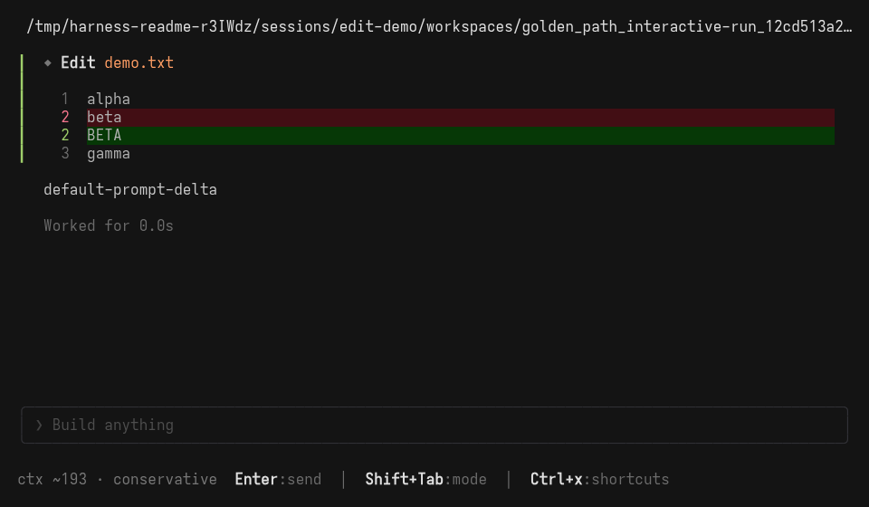

Append-only truth
Every meaningful transition enters an ordered JSONL event stream. State is derived, not guessed.
Rust / Ratatui / Local-first
Event stream onlineAgent Harness is a terminal-native runtime for coding agents that need to act, delegate, and leave a replayable trail—without surrendering control of the workspace.
Every meaningful transition enters an ordered JSONL event stream. State is derived, not guessed.
The coordinator owns scheduling, permissions, hooks, compaction, tools, and lifecycle decisions.
Inspection rebuilds state without invoking providers, tools, hooks, MCP servers, or network calls.
Child sessions remain observable, cancellable, and linked to their parent through durable lineage.
harness-coreCoordinator, events, projections, configuration, permissions, redaction, lineage, and atomic hashline edits.
harnessInteractive launch, headless runs, authentication, doctor, config tools, replay, and session commands.
harness-providersStreaming provider abstraction, OpenAI-compatible transport, OAuth support, mock fixtures, and usage metadata.
harness-toolsWorkspace operations, shell execution, research, language intelligence, skills, delegation, and session inspection.
harness-tuiCompose-first terminal shell with live events, permission prompts, diffs, replay, and session navigation.
harness-testkitDeterministic fakes, simulation helpers, PTY end-to-end checks, native evidence, and validation utilities.
A prompt enters through the terminal UI or headless CLI.
The provider emits normalized text, reasoning, and tool-call events.
The coordinator resolves allow, deny, or ask before a capability runs.
Native tools operate inside workspace and capability boundaries.
Redacted results are appended, projected, inspectable, and replayable.
Guardrails are structural rather than cosmetic. The coordinator is the only authority allowed to append events, resolve permissions, schedule tasks, apply lifecycle transitions, or coordinate compaction.

The deterministic mock path exercises a complete turn before credentials or provider transport enter the equation.
# Build the CLI $ cargo build -p harness # Validate config and local readiness $ target/debug/harness --config configs/harness.example.jsonc config validate $ target/debug/harness --config configs/harness.example.jsonc doctor # Prove the complete path offline $ target/debug/harness run --mock "Hello from Harness" \ --out prompt.events.jsonl --print-run-dir # Open the interactive terminal shell $ target/debug/harness